Here's an introduction to an instrument that has both a long history and a promising future.
Some people call it a 'tator bug because of its traditional round back, but most people know it as a mandolin. The instrument, a distant relative of the lute and (even more distantly) the guitar, was brought to America from eastern Europe during the last century. It wasn't exactly an overnight success, though-probably because the import's bowl-like back made it frustratingly hard to hang onto to play.
But in the late 1800's, an instrument maker in Kalamazoo, Michigan, named Orville Gibson designed an easy-to-hold, flat-backed model that dramatically increased the mandolin's popularity. Mandolin societies and even mandolin orchestras sprang up everywhere and flourished. The Gibson company went into full production, building not only regular mandolins but also banjo mandolins, mando-cellos, mando-basses, and even tiny piccolo mandolins.
The instrument's heyday continued up until the time America entered World War I. Then "hot" music became the country's passion . . . and the mandolin was usurped in bands by the tenor banjo, which of course was louder and could more easily compete with horns in the new jazz orchestras. The mandolin was put away to gather dust.
A couple of decades later (in October of 1939, to be exact), Bill Monroe walked onto the stage of WSM's Grand Ole Opry for the first time . . . and not only ushered in a new style of music, which we now call "bluegrass," but also rescued the mandolin from near oblivion. Before Monroe demonstrated the vast possibilities of the mandolin with his dazzling virtuosity, the instrument had played only a fairly minor role in country music; it had always taken a backseat to the fiddle and guitar. True, many of the old-time brother duets of the 30's (probably the most notable of which was Lester McFarland and Robert A. Gardener, better known as Mac and Bob) did use the mandolin for both lead and accompaniment. But for the most part, it was played in a rather laid-back, subdued fashion.
All that changed with the coming of Bill Monroe. Backed by his band, the Blue Grass Boys (which in the mid-40's included such legendary greats as Lester Flatt and Earl Scruggs), Monroe forged new directions for the mandolin and brought the instrument to national attention.
In the years since, bluegrass has become a respected form of American music. Practically every bluegrass band today includes a mandolin. And a young contemporary mandolinist by the name of David Grisman has generated even more interest in the instrument by creating a compelling new sound he calls Dawg Music: an inventive, often complex combination of instrumental gypsy jazz (a la Django Reinhardt and Stephane Grappelli) and bluegrass. American and Japanese instrument manufacturers are hard put to keep up with the current demand for mandolins, and no doubt the 'tator bug will continue to enjoy a steady rise in popularity over the years ahead.
I hope that some of you out there got ambitious over the past couple of months and built your own "hamdolin" (a rather funky mandolin made out of a ham can), using the instructions I provided in the last issue of MOTHER. But even if you didn't, you should have no trouble getting your hands on a playable mandolin-beginner's models are fairly inexpensive and available most anywhere instruments are sold. (You can also sometimes find them, bargain priced, at flea markets and garage sales . . . so keep your eyes peeled.) The mandolin is a great instrument for learning to play any or all of a variety of styles: folk, country, bluegrass, old-time, and even ragtime and jazz. So whatever effort you have to make to obtain an instrument and pick up the basics for making music on it will be well worth your while-that's a promise. Besides, I'll make learning to play so simple you'll be picking out tunes in a matter of minutes.
So what are we waiting for? Let's get started right now . . . hold on to your hat!
Before we jump right in and start to play, we'd better make sure that your instrument is in playable condition and that it's tuned. (First things first, right?)
I'm assuming that you've already checked to make sure that your mandolin's tuning pegs work smoothly, that the instrument isn't noticeably cracked or warped, and that it has all its strings-there should be four pairs. Although the mandolin has a total of eight strings, both members of each pair-called unison strings-are tuned to the same note and played at the same time. Thus, each pair is counted as only one string. . . either the first, second, third, or fourth.
Now let's take a look at your mandolin's action, which in musician's language means the height of the strings from the fret board. This is a critical factor, because if the strings are too high, you'll have a hard time pushing your fingers down on them to create notes and chords, and if they're too low, they'll rattle or buzz on the frets (the little metal bars spaced at various intervals along the neck).
Hold your mandolin on your lap so that the neck is pointing to the left, and look at the little strip of bone or plastic, near the tuning pegs, which the strings cross over. This is called the nut. The grooves in the nut should allow the strings to barely clear the first fret.
Now look at the bridge -the wooden bar that the strings cross over at the other end of your mandolin. The bridges on most modern mandolins have round adjustment nuts that allow you to raise or lower the action. To determine whether you need to do that, reach into your pocket end pull out some change (or borrow some from a less poverty-stricken friend). Now stick a nickel between the strings and the twelfth fret, and adjust the bridge so that the action at that fret is exactly a nickel's thickness. This will give you an extremely low action, but you should keep in mind that a low action is generally easier to play. If the strings make funny buzzing noises when you play them, though, the action is too low , and you'll need to raise them up just a bit.
Generally, the best idea is to keep the strings low while you're learning to play and then raise them up some when you're ready to start showing off-most experienced players prefer a higher action because it produces a louder sound. (Incidentally, whenever you do need to raise the strings, it's a good idea to carefully twist a screwdriver between the lower and upper parts of the bridge, to make adjusting the screws easier.)
If you have any trouble getting your strings set up properly-so that they're just a hair above the first fret and about a nickel's width above the twelfth-show your mandolin to a musician friend or take it to a store that specializes in musical instruments. Most folks who are into making music are more than happy to help an eager beginner.
OK. Now that you have your mandolin adjusted and rarin' to go, let's get it in tune. Sit down with your instrument again, holding it just as I described earlier, and look at the strings: The pair closest to your knee is a the first string and should be tuned to E. The second should be tuned to A, the third to D, and the fourth to G. There are a number of ways to accomplish this, so let's take a look at each one.
Tuning to a pitch pipe: As you may know, the mandolin's four strings are tuned to the same notes as a violin's four strings . . . so if there's a music store in your neighborhood, it'd be a good idea to stop in and pick up a violin pitch pipe. Then you can tune your mandolin's strings simply by adjusting them to match the pitch pipe's four notes.
Tuning to the mandolin: If you don't have access to a pitch pipe, don't panic; you can always tune the mandolin to itself. Here's how: Tune both G unison strings so that they sound exactly the same. Then hold down that pair (the "fourth string") at the seventh fretin other words, push the string down onto the space between the sixth and seventh metal strips-and pluck it. Be sure to push your fingers onto the fret board hard enough to get a good, clear sound.
Now pluck the third string without pushing it down on any of the frets, and compare the resulting note with the one the G string produced. If there's a difference, change the D unison strings until that pair produces the same note when played open, or unfretted, as the G string makes when held down at the seventh fret. Once you get the D string to sound right, push it down at the seventh fret and adjust the A unison strings in the same manner . . . and finally, finger the A string at the seventh fret and tune the E unison strings so that they correspond to the fretted A. All this sounds complicated, but it's not really. Try it, and you'll see.
Tuning to a guitar: Well-tuned guitars are hard to come by, but if you do find one you can tune your mandolin to it. Just make your E string sound the same as the guitar's first, or bottom, string, which is also an E. Then ask the person holding the guitar to play the third string at the second fret; that'll give you the note for your A, or second, string. Next, have the guitarist play the fourth, or D, string, and tune your D string to match. And finally, tune your G string to correspond with the note produced by the guitar's third, or G, string. An even better way to tune a mandolin to a guitar is to have the guitarist play E, A, D, and G chords for you. (In any case, thank your friend for the help; you just might need his or her services again!)
Tuning hints: There's no getting around it: The mandolin is a persnickety instrument to tune; the double strings seem to play tricks on your ears. Even expert players have a tough time getting their instruments adjust ed perfectly. The only consolation is that once you do get the thing in tune, it tends to stay that way better than, say, a banjo.
When you're tuning a string, pluck it with your pick at the same time you're turning the peg. This will give you a better feel for how much the string is changing, and should therefore help you get it adjusted that much quicker. Also, if you're having trouble tuning one string in a pair without sounding the other string too (either because you strike it accidentally or as a result of sympathetic vibration), just lay a finger on the offender to muffle it while plucking its twin.
Tuning can be frustrating and tricky, so be patient and keep on trying. Take heart in knowing that other beginning mandolinists are also struggling at this very moment to get their blankety-blank instruments in tune.
Picks come in a variety of sizes, shapes, and thicknesses. After you've been playing awhile, you'll get a feeling for which kind is best for you. For starters, though, I recommend a teardrop-shaped medium pick . . . and I also suggest that you buy several rather than just one or two. A good rule of thumb is to get one pick for every pair of blue jeans you own. That's what they made that little pick pocket for, isn't it?
Holding the pick: Stick your right hand out in front of you, as though you were going to shake someone's hand (see photo 1). Now, while keeping your other fingers pointed straight out, bend your index finger inward, as shown in photo 2. Then balance your pick on the first joint of your index finger, with the tip of the pick pointing straight to the left (photo 3). Finally, to keep your pick from falling on the floor when you play, lay your thumb on the middle of the pick with enough pressure to restrain the thing (photo 4), but not so much that your thumb turns blue. You get the idea. The middle of your thumb should be right on the middle of the pick . . . and the pick, in turn, should be resting directly on the first joint of your index finger. Remember to keep your other fingers pointed outward.
When it comes to making music on the mandolin, the expression "It's all in the wrist" is absolutely true. Subtle, nimble wrist movement is one of the keys to playing the instrument. Practice: While holding the pick as I just described, move your wrist up and down but keep the rest of your arm still. Then, when you get that down, practice strumming your mandolin's strings, using your amazing new flexible wrist. Keep the pick at a right angle to the strings, as shown in photo 5.
The mandolin is well suited to playing melody, harmony, fill-in notes, and chords for accompaniment.
Let's start by learning a few simple chords. To play a D chord, push the first, or E, string down at the second fret with your middle finger, and-at the same time-fret the fourth, or G, string at the second fret with your index finger. (See photo 6). Keep in mind that when you're chording, it's important to push down hard enough on the strings to make each note ring clear. One way to make this easier is to hold your left thumb against the back of the neck (as shown in photo 7) and squeeze the strings between your thumb and fingers. Now strum all four strings with your pick. There! You've just played your first chord! Why, before you know it, you'll be ready to play a whole song! In fact, that gives me an idea . . .
Most songs in country, bluegrass, and folk music can be played using only three chords . . . and in a few cases, you need to know only one chord to perform the tune. "Row, Row, Row Your Boat" is that kind of song. Are you game? Of course you are . . .
Finger a D chord and strum down on all four strings, over and over, with a constant, rhythmic stroke. Try keeping a strong, steady beat, like the ticktock of a grandfather clock. Then, once you get that going, try singing "Row, Row, Row Your Boat" to the beat. Here's the song written out, with slash marks indicating where to strum to keep the rhythm going:
By george, I think you've got it! Now that you've mastered your first song, you're ready to tackle anything, right? That's the spirit! Let's learn another chord: an A.
Hold your left index finger on the third, or D, string at the second fret-as shown in photo 8-and strum the bottom three strings (but not the fourth, or G, string). That's all there is to it-A is a one-finger chord!
Now practice playing your D and A chords, changing from one to the other without stop ping or even hesitating. It'll take a while for you to learn to do this smoothly, but it won't take as long as you think it will-so just keep at it.
Yes, I know playing two chords over and over again loses its thrill after a while. Let's liven things up a little by learning a new song; this one's in waltz rhythm. The timing here sounds like tick lock rock, tick lock rock, or one two three, one two three.
While holding your D chord, play the fourth, or G, string once with your pick ("tick"), and follow that by two strums down over the bottom three strings ("rock lock"). Play that over and over until you can keep a good waltz rhythm going.
Now try it using your A chord. Remember, though, you should avoid hitting the fourth string. This time play your first note, or "tick," with the third string held down at the second fret. Then follow that with two strums ("rock lock") on the bottom two strings. After you've repeated the whole process a few times, practice keeping your right hand going while changing chords. And when you have that down, you'll be ready to play a fine old waltz: "Down in the Valley." Here it is written out (the D and A over the words tell you which chord to hold and when to change):
Now that you've mastered your D and A chords, and played them with incredible feeling in waltz time, let's learn another chord-a G-and play all three chords (gasp!) in regular time.
To create a G chord, fret the second, or A, string at the second fret with your index finger, and push the first, or E, string down on the third fret with your middle finger, as shown in photo 9.
Once again, practice changing from one chord in your repertoire to the others until you can switch back and forth without missing a beat.
OK, now let's try a good old country tune: "Will the Circle Be Unbroken?" This time your strum, while you're on your D and G chords, will involve striking the fourth string first, followed by a single downstroke on the bottom two or three strings. When you're holding an A chord, begin by striking the third string at the second fret (avoiding the fourth string, of course), then follow with a strum on the bottom two or three strings. The rhythm will sound like tick tock, tick cock, with a slight accent on the "tock."
It's important to learn a few scales, because they contain the notes you'll need in order to play melodies-it's the same kind of thing as developing a vocabulary so that you can construct sentences.
All scales contain eight notes; the first and last notes are always the same, but an octave apart. For example, a D scale has these notes:
You definitely do not need to be able to read music to play the mandolin, but if you do know how, we won't hold it against you. Here's the D scale in musical notation:
Now, here's how to find the D scale on your mandolin. The first note of the scale (D, of course) is played by striking the third, or D, string open. Next, push the D string down at the second fret with your index finger and play it . . . that's an E. Then play the D string at the fourth fret, using your middle finger, to get an F# . . . and at the fifth fret, using your ring finger, to produce a G. Follow that by playing the second, or A, string open to get (obviously) an A. Press your index finger down on the A string at the second fret to produce a B . . . use your middle finger at the fourth fret to play a C# . . . and finally, press your ring finger down on the A string at the fifth fret to finish the scale with a high D.
Practice your scale over and over, using just a downstroke on your pick to strike each note. Then try playing the notes by alternating up and down strokes with your pick. Don't forget to hold your pick properly and to move only your wrist, not your arm, as you strike the strings.
OK, so you've practiced (and practiced, and practiced some more), and you're feeling pretty slick, eh? You say you can play the D scale forward and backward over and over without the slightest stumbling or hesitation? Great! Now let's learn how to use that amazing scale of yours.
As I said, scales are the building blocks with which you create melodies. Once you get comfortable with the D scale and develop a "feel" for the notes-how they sound, and where they are on your mandolin's fingerboard-you'll be ready to experiment a little. Try going partway up the scale and then back down. Or play the first few notes and then skip a note or two before completing the scale. Play every other note.
As you become more and more adventurous, you'll discover familiar melodies right at your fingertips! I'll give you an example. Play the first three notes of the scale: D (strike the third, or D, string open) . . . E (third string, second fret) . . . and F# (third string, fourth fret). Then play your D string open again, and repeat the four notes.
Recognize the tune? Well, it should sound like "Frere Jacques," otherwise known as "Are You Sleeping?" The rest of the melody (and thousands of others) can be picked out using only the eight notes of the scale. Go ahead . . . see how many other songs you can put together with your D scale.
With a little practice and fearless experimentation, you'll soon be amazing yourself and impressing your friends. And just think: This is only the beginning! You and your mandolin have just barely begun to get to know each other. There are lots of good books out there that'll help you two become better acquainted-and don't forget that the very best way to learn how to make any kind of music is to get together with other folks who play. (In fact, this is especially true for the mandolin, which, because of its relatively high pitch, sounds much better when played in concert with a broader-ranged instrument, such as a guitar.) So go ahead and join in. Don't be shy . . . everybody starts out as a beginner!
Good luck, and keep pickin'!
EDITOR'S NOTE: One excellent book on learning to play the mandolin is Bluegrass Mandolin, by lack Tottle (Oak Publications, $8.95). The book, which comes with an instruction record, is available at most libraries and bookstores.
Wayne Erbsen is director of the Appalachian Music Program at Warren Wilson College in Swannanoa, North Carolina. Mr. Erbsen is also the author of a number of books on playing various instruments and music: Painless Mandolin ($12.95, with cassette), Clawhammer Banjo for the Complete Ignoramus! ($6.95), Starting Bluegrass Banjo From Scratch ($7.95), Bluegrass Banjo Simplified!! ($12.95, with cassette), The Complete & Painless Guide to the Guitar ($6.95), The Backpocket Bluegrass Songbook ($3.95), and The Backpocket OldTime Songbook ($3.95). All are available for the cover price, plus $1.00 postage per order, from Wayne Erbsen, 825 Bee Tree Rd., Swannanoa, NC 28778.
|
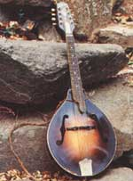 |
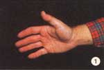 |
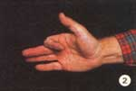 |
|
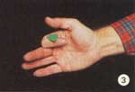 |
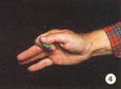 |
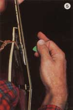 |
|
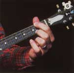 |
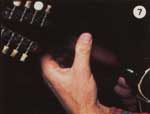 |
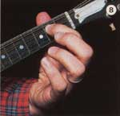 |
|
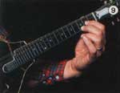 |
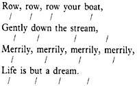 |
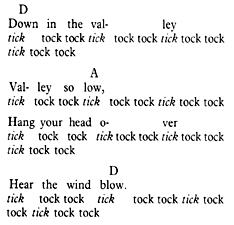 |
|
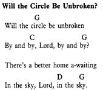 |
|
|